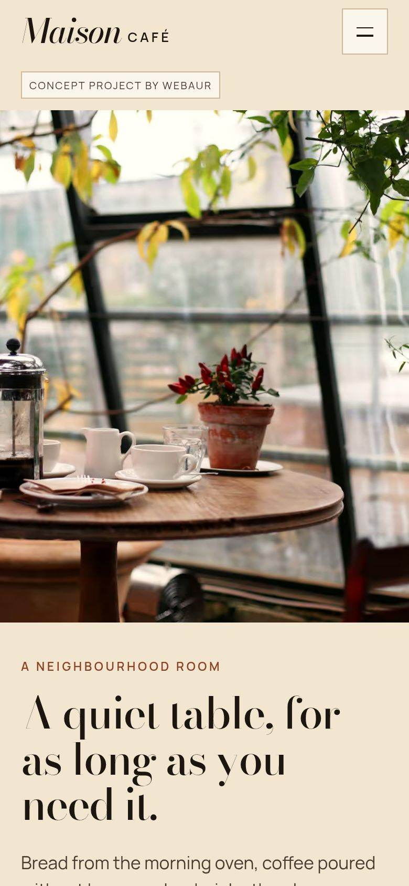

TYÖT
Eri yrityksiä. Erilaisia digitaalisia kokemuksia.
Kolme valmista konseptiprojektia, kukin rakennettu monisivuisena brändisivustona. Ne ovat itsenäisiä suunnittelukonsepteja — eivät maksavan asiakkaan töitä — ja näyttävät, miten WEBAUR lähestyisi eri yrityksiä.
Hale Barber Studio
Viisisivuinen konsepti itsenäiselle parturille. Sivusto rakentuu rauhalliselle hetkelle tuolissa: luunväri, metsänvihreä ja kuvia huoneesta, ei valmiskuvien hymyistä.


Alto Detail
Showroom-henkinen konsepti detailing-studiolle: harmaa, oksidinpunainen ja autot kuvattuna esineinä hallissa. Viisi sivua, joukossa tulossivu ennen–jälkeen-liukusäätimineen.


Keskeinen toiminto
Sama auto, kahdesti.
Liukusäätimet vertaavat saman valokuvan kahta käsittelyä. Ne ovat havainnollistavia, eivät todiste maksavasta työstä.


Maison Café
Nelisivuinen kahvilakonsepti pergamentilla, pullonvihreällä ja kuparilla. Sivusto on rakennettu kuin lyhyt julkaisu: pöytä, lista, tarina ja vierailusivu, joka myöntää elävänsä vain tarinassa.


ALOITA PROJEKTI
Rakennetaan jotain, jonka asiakkaasi muistavat.
Kerro yrityksestäsi ja siitä, mitä haluaisit parantaa. Me hoidamme loput.